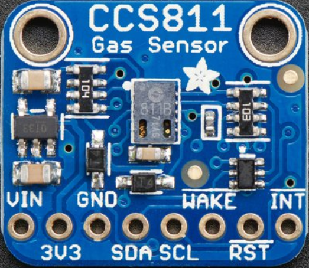

AstroPiQuake Temperature Smiley


Click on the device, then move the temperature
slider to see Smiley's face change color
Air MacClean CO2 Sensor

Air MacClean detects CO2 and TVOC
Build your own air quality sensor
AstroPiQuake Earthquake Detector

Click on the device
grab the emulator with your mouse
shake it to simulate an earthquake
watch the accelerometer readings
Enviro senses temperature, pressure, light, local color, accelerometer readings, and magnetometer data
Build your own environment sensor

Detect an earthquake
How do accelerometer readings help detect an earthquake?

Get instructions for building your own earthquake detecter
Why use more than one sensor?
What does this chart show?